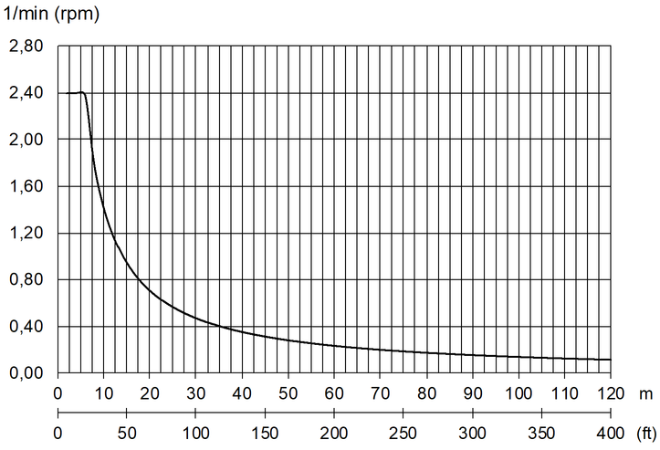

Drehwerksgeschwindigkeit einstellen
Die Maschine verfügt über keine Sicherheitsvorrichtungen zur Begrenzung der Drehwerksgeschwindigkeit.
Die maximale Drehwerksgeschwindigkeit ist in den technischen Daten des Drehwerks angeführt.

GEFAHR
Zu hohe Drehwerksgeschwindigkeit!
Kippen der Maschine, Versagen der Struktur.
Vor Drehen des Oberwagens maximal zulässige Drehwerksgeschwindigkeit für aktuelle Traglast und Ausladung ermitteln. |
Vor Drehen des Oberwagens sicherstellen, dass eingestellte Geschwindigkeitsstufe geeignet ist. |
Sicherstellen, dass maximale Drehwerksgeschwindigkeit der gewählten Geschwindigkeitsstufe maximal zulässige Drehwerksgeschwindigkeit nicht überschreitet. |
Das folgende Diagramm zeigt die maximal zulässige Drehwerksgeschwindigkeit in Abhängigkeit der Ausladung.

Fig. 3800: Maximal zulässige Drehwerksgeschwindigkeit in Abhängigkeit der Ausladung
Fig. 3800: Maximal zulässige Drehwerksgeschwindigkeit in Abhängigkeit der Ausladung

GEFAHR
Zu hohe Drehwerksgeschwindigkeit für Not-Halt!
Kippen der Maschine, Versagen der Struktur.
Drehwerksgeschwindigkeit so wählen, dass zulässiger Schrägzug bei Not-Halt eingehalten wird. |
In folgenden Situationen muss Traglast zusätzlich reduziert werden:
– | Große Auslegerlängen |
– | Traglasten, die maximal zulässiger Traglast nahe kommen |
– | Windböen, besonders wenn zu hebende Last große Windangriffsfläche hat |
Die Drehwerksgeschwindigkeit ist in drei Stufen einstellbar.
Die Geschwindigkeitsstufe des Drehwerks bleibt nach dem Ausschalten der Zündung gespeichert.

Taste Geschwindigkeitsstufe des Drehwerks am Steuerpult X23 drücken. |
Anzeige Geschwindigkeitsstufe des Drehwerks wird am Bildschirm eingeblendet: |

Taste Geschwindigkeitsstufe des Drehwerks am Steuerpult X23 erneut drücken. |
Geschwindigkeitsstufe des Drehwerks wird geändert. |
Ziffer in Anzeige Geschwindigkeitsstufe des Drehwerks wird geändert. |